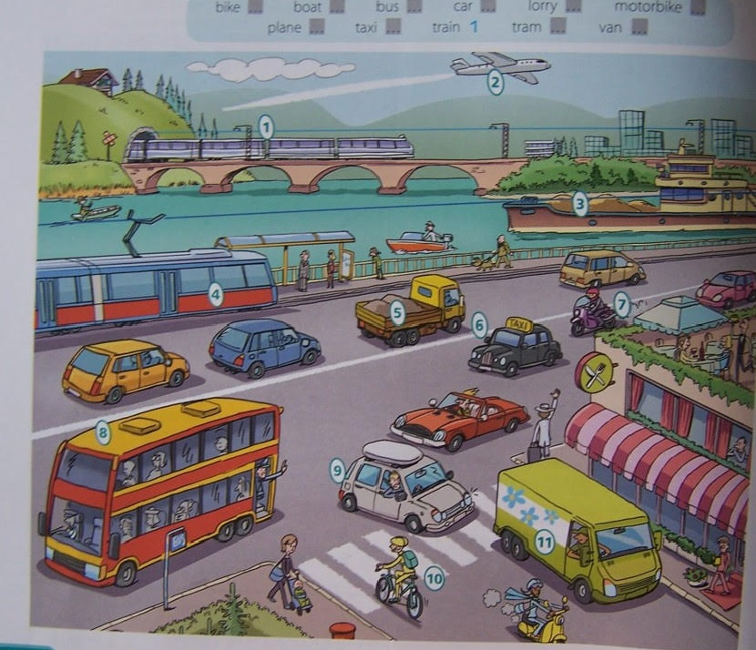

Klasa 8A
wychowawca Beata KlimowiczJĘZYK ANGIELSKI grupa 1 i 2
Topic: I travel to school by bus – Ja jeżdżę do szkoły autobusem
Zadanie 1 Popatrz na obrazek. Dopasuj nazwy środków transportu do właściwych elementów obrazka (1-11). Podawaj nazwy na głos.
Obraz w załączniku

Gdy chcemy powiedzieć, czym podróżujemy, mówimy:
by bus [baj bas] -autobusem
By train [baj trejn] - pociągiem
By tram [baj trem] - tramwajem
By car - samochodem
Ale: on foot [on fut] - na piechotę
Zadanie 2 Przeczytaj pytania i odpowiedz na nie według przykładu.
Słowniczek:
travel [trewel] – podróżować
How far? Jak daleko?
How long? – Jak długo?
journey [dżerni] podróż
It takes me ... [it tejks mi] - zabiera mi .... czasu
Kilometre [kilomite] - km
- How do you go to school? Jak dojeżdżasz do szkoły?
I go to school by car. And you?
I go …………………………………………………………
- How far do you live from school? Jak daleko mieszkasz od szkoły?
I live five kilometres from school. And you?
I ……………………………………………………………
- How long does the journey take you? Jak długo trwa podróż?
It (the journey) takes me ten minutes. (Podróż) Zabiera mi 10 minut.
What about you? A tobie?
It takes me ..................... minutes.
USPRAWNIANIE TECHNIK SZKOLNYCH- MATEMATYKA (Amelia, Patryk, Klaudia)- 1 lekcja
Witam.
Przesyłam zadania na zajęcia rewalidacje dla wszystkich według planu lekcji /więcej robi Alan i Łukasz -mają 2 rewalidacje w tygodniu-powtarzają wzory na pola i obwód figur płaskich/
- Oblicz pole równoległoboku a= 6cm, a wysokość = 4cm.
- Oblicz pole rombu d1=8cm, d2=4cm.
- Jeden z boków prostokąta ma 5cm, a drugi jest o 3cm dłuższy . Oblicz pole i obwód tego prostokąta.
- Oblicz pole kwadratu, którego obwód wynosi 8cm.
Pozdrawiam Zofia
USPRAWNIANIE TECHNIK SZKOLNYCH- JĘZYK POLSKI ( Łukasz, Alan, Szymon, Wanessa)
Napisz
- Jak się czujesz? Dlaczego tak możesz się czuć ?
- Ułóż list do kolegi lub do koleżanki na temat wyjazdu na zieloną szkołę.
Nazwa miejscowości, data
........................................
........................................
(Kochana Olu. Drogi Jurku, Cześć Basiu – pamiętaj o wielkiej literze i zwrotach grzecznościowych)
Od kilku dni jesteśmy na zielonej szkole
w........................................
to piękna miejscowość, położona na........................................
Polski. Można zobaczyć tu........................................
........................................
Odbyliśmy już kilka wycieczek do........................................
........................................
Cały dzień mamy zorganizowane ciekawe zajęcia:
........................................
Cieszę się, że udało mi się tu przyjechać z ...........................
........................................
Przesyłam pozdrowienia i ucałowania
Podpis….
LOGOPEDIA -1 lekcja ( Karol, Daniel)
Ćwiczenia usprawniające narządy mowy (każde ćwiczenie wykonaj 5 razy):
szeroko otwieraj i zamykaj usta, ziewaj,
podnieś język, oprzyj go na górnych dziąsłach, uderzaj językiem o podniebienie (kląskanie),
zaciśnij wargi i wysuń do przodu, następnie uśmiechnij się,
nabierz powietrza przez nos, wypuść przez usta mówiąc jednocześnie /żżżżżżżżżż/
Przeczytaj wiersz zwracając uwagę na poprawną wymowę.
Chrząszcz c.d.
„Też pytanie! Wszystkie gaje,
Wszystkie trzciny po wsze czasy,
Łąki, pola oraz lasy,
Nawet rzeczki, nawet zdroje,
Wszystko to jest właśnie moje!”
Wół pomyślał: „Znakomicie,
Też rozpocznę takie życie”.
Wrócił do dom i wesoło
Zaczął brzęczeć pod stodołą
Po wolemu, tęgim basem.
A tu Maciek szedł tymczasem.
SOCJOTERAPIA ( Mateusz)- 2 lekcja
Temat: Trudne historie ludzi...
Obejrzyj film Dobromira Makowieckiego opowiadającego swoją historię życia. Zwróć uwagę jak wybrnął z trudnych życiowych sytuacji.
https://www.youtube.com/watch?v=j_fM4FLJCu4
MATEMATYKA
Temat: Oś symetrii figury-zadania.
1. Strona: Obrazy do oś symetrii figury- obejrzyj i wybierz 3 przykłady, przerysuj do zeszytu / których nie było/.
2. Zadanie- które litery alfabetu mają oś symetrii? Które z liter mają więcej niż jedną oś symetrii?
3. Zadanie- ułóż po jednym wyrazie , który ma oś symetrii/ poziomą, pionową/
4. Zadanie- ile liter w wyrazie ORNAMENT ma oś symetrii?
A-1 B-3 C-4 D-5
5.Zadanie- który napis nie ma osi symetrii?
A. KOK B. SOS C. MIM D. BOB
Pozdrawiam p. Zosia.
JĘZYK POLSKI
Temat: Ćwiczymy sztukę interpretacji
NOTATKA
Jak napisać opis obrazu?
Zanim zaczniesz opisywanie dzieła sztuki, musisz odpowiedzieć sobie na parę pytań:
Jaki jest jego temat?
Jak autor je skomponował?
W jakiej technice zostało wykonane?
Co wnoszą kształty, kolory, światło?
Jak można je ocenić?
Jakie uczucia wzbudza?
Najczęściej opisuje się dzieła malarskie. W opisie obrazu ważne jest stosowanie odpowiedniego słownictwa. Wyobraź sobie, że przez telefon opowiadasz koledze o tym, co widzisz, a on próbuje to odwzorować – musi więc mieć podane odpowiednio dokładne informacje.
Podczas opisywania kompozycji stosuj zwroty typu: w punkcie centralnym, na pierwszym planie, na drugim planie, po lewej stronie, po prawej stronie, u góry, na dole, można zobaczyć, widać, artysta umieścił, malarz przedstawił
Stosuj wyrazy oceniające, ukazujące Twój stosunek do dzieła: piękne, zachwycające, wywołujące uśmiech, przygnębiające, melancholijne, niedbałe, perfekcyjne, znakomicie, dokładnie
SCHEMAT OPISU OBRAZU
|
Wstęp |
Kto jest autorem obrazu? Kiedy powstało dzieło? W jakiej technice je wykonano? Gdzie znajduje się obraz? --------------------------------------------
|
|
Rozwinięcie |
Jaka jest tematyka obrazu? Co przedstawia? (ogólnie) Co jest punktem centralnym? (opisz go) Co znajduje się na pierwszym planie? (na prawo i na lewo) Co znajduje się na drugim planie? (jeśli takowy jest) Jak wykonano tło i co ono przedstawia? Jakie barwy zastosował artysta i co przez nie uzyskał? Jaki jest nastrój obrazu, jakie uczucia wzbudza? ---------------------------------------------- |
|
Zakończenie |
Jak oceniasz malowidło? Dlaczego Ci się podoba/nie podoba? Czy taki rodzaj sztuki do Ciebie przemawia? |
|
Kolejność odpowiedzi na te pytania zależy od Ciebie. Pamiętaj jednak, aby przemyśleć kompozycję opisu dzieła – musi być zachowany porządek. Każdą część wypowiedzi podkreślaj akapitem. Najpierw ułóż plan. Pisz na brudno, a później przepisz na czysto – zyska na tym estetyka Twojej pracy. |
|
Zadanie: Opisz , co widzisz na wybranym przez siebie obrazie ( jakie kolory, kształty, postaci widzisz, używaj przyimki nad, pod, za itp.).
Wiele materiałów znajdziesz na stronach internetowych polskich i zagranicznych muzeów np.:·Galeria Zachęta, http://otwartazacheta.pl/index.php?lang=pl·Muzeum Narodowego w Warszawie, http://cyfrowe.mnw.art.pl/dmuseion
WOS
Temat: Konflikty zbrojne na świecie
Obejrzyjcie prezentację: https://www.youtube.com/watch?v=wvPLEnQk3hM
Rodzaje terroryzmu:
- TERRORYZM RELIGIJNY
Stawia sobie za cel zwalczenie innych wyznań i ustanowienie dominacji danej religii (np. działalność Al-Kaidy i tzw. Państwa Islamskiego).
- TERRORYZM NARODOWOWYZWOLEŃCZY
Wynika z dążenia narodu do niepodległości lub przyłączenia własnego terytorium do innego państwa (np. walka organizacji ETA o niepodległość kraju Basków, który jest częścią Hiszpanii)
- TERRORYZM POLITYCZNY
Jego celem jest przejęcie władzy, zmiana ustroju lub wymuszenie określonych rozwiązań prawnych (np. działalność komunistycznej organizacji Świetlisty Szlak w Peru).
- TERRORYZM KRYMINALNY
Ma na celu osiągnięcie korzyści materialnych (np. porwania dla okupu)
EDUKACJA DLA BEZPIECZEŃSTWA
Temat : Zatrucia pokarmowe.
Niektóre substancje działają toksycznie na organizm ludzki. Do zatrucia pokarmowego dochodzi wskutek celowego lub przypadkowego połknięcia szkodliwej substancji, np. leków, rozpuszczalników lub kwasów. Często poszkodowane są dzieci, które połknęły trującą substancję wskutek nieuwagi dorosłych. Czym zatem jest trucizna i jak skutecznie zapobiegać zatruciom?
Już wiesz:
że bezpieczeństwo ratownika jest najważniejsze;
jak zbadać oddech i ułożyć poszkodowanego w pozycji bocznej bezpiecznej;
jakich informacji udzielić dyspozytorowi, wzywając pogotowie ratunkowe.
Nauczysz się:
określać, czym jest trucizna i od czego zależą objawy zatrucia;
opisywać rodzaje i najczęstsze przyczyny zatruć;
wyjaśniać podstawowe zasady udzielania pierwszej pomocy w przypadku zatruć.
Obejrzyj prezentację:
https://slideplayer.pl/slide/3269664/
Przeczytaj tekst i zapoznaj się z poniższymi zagadnieniami:
https://epodreczniki.pl/a/pierwsza-pomoc-w-przypadku-zatrucia/DL0NpKmN
- Zatrucie i jego objawy
- Rodzaje i przyczyny zatruć
- Pierwsza pomoc w przypadku zatrucia
- Zatrucie lekami
- Zatrucie środkami chemicznymi
Rozwiąż zadania ze strony
FIZYKA
Temat : Wady wzroku. Krótkowidz.
zapisz do zeszytu:
Soczewki służą do korygowania wad wzroku. Wadę wzroku mierzymy w tak zwanych dioptriach (D). Dioptrie to zdolność skupiająca soczewek korygujących wadę wzroku. Krótkowidz używa soczewek rozpraszających . Nie skupiają one promieni światła mówimy, że mają zdolność skupiającą ujemną np. -3 D)
zad.1.
zobacz film :
https://www.youtube.com/watch?v=ODLGnvTGVxg&t=616s
Co to jest akomodacja oka
Narysuj schemat oka z padającym do niego światła u krótkowidza
WYCHOWANIE FIZYCZNE – CHŁOPCY
Temat : Ćwiczenia stymulujące rozwój dużej motoryki
Uwagi wstępne :
- ćwicz tylko wtedy, jak jesteś zdrowy
- staraj się ćwiczyć w stroju sportowym
- ćwicz przy otwartym/uchylonym oknie
- ćwiczenia główne poprzedź 10 min. rozgrzewką
- pamiętaj o rozluźnianiu mięśni pomiędzy ćwiczeniami
Propozycja ćwiczeń :
- Biegnij w miejscu 4 - 5 minut .Podczas biegu wykonaj różnorodne krążenia
ramion ( oburącz w tył, w przód, naprzemianstronne w przód i w tył)
- Stojąc w rozkroku , tułów rozluźniony - wykonaj skłon w przód, raz do jednej,
raz do drugiej nogi - po 5 x
- Stań w rozkroku ,ramiona w dół - wykonuj wymachy ramion w górę, co trzeci
wymach wyskok w górę z odchyleniem tułowia i nóg do tył
- Stań w rozkroku, ramiona na karku - wykonaj skłony tułowia w prawą i lewą
stronę po 5 x
- W podporze przodem( na ramionach)wykonaj przeskokiem skurcz nóg do
przysiadu i powrót - 10 x
- W podporze przodem wykonaj 2 x 15 pompek
- W leżeniu tyłem , dłonie splecione na ramionach, nogi podkurczone
wykonaj 2 x 20 brzuszków
- W postawie stojąc wykonuj podskoki ,co trzeci podskok, wyskok w górę
z podciągnięciem kolan do klatki piersiowej
- Ćwiczenie oddechowe - stań tyłem przy ścianie ,wysuń stopy w przód,
rozluźnij mięśnie i wykonaj głębokie wdechy i wydechy - 10 x
Każdą serię powtórz 2 x , przerwa pomiędzy seriami ok. 10 min.
Dziękuję.
ZAJĘCIA DODATKOWE – ARTYSTYCZNE (Wanessa) 2h
Temat: Dzieci z różnych stron świata.
Zadanie. Wykonaj z bloku technicznego prace pt. Dzieci z różnych stron świata.
Powodzenia :-)
Temat: Ja - jako projektant.
Zadanie: Dziś projektujemy własny kubek. Wykonaj rysunek na kartce z bloku.
Z okazji Dnia Dziecka
Życzę Ci, aby każdego dnia spotkało Cię coś zaskakującego.
Powinno to być coś, co wprawi Cię w zadumę.
Nie tylko wielkie sprawy wywołują zdumienie i zachwyt,
najczęściej wystarczą małe,
powszednie rzeczy i wydarzenia:
taniec motyla, rozkwitający pączek, śpiew słowika nad polami.
Tych małych, codziennych odkryć
serdecznie Ci życzę p. Irena
USPRAWNIANIE TECHNIK SZKOLNYCH – JĘZYK POLSKI ( Amelia, Klaudia) 1 lekcja
pisz jak się czujesz? Dlaczego tak możesz się czuć ?
- Ułóż list do kolegi lub do koleżanki na temat wyjazdu na zieloną szkołę.
Nazwa miejscowości, data
........................................
........................................
(Kochana Olu. Drogi Jurku, Cześć Basiu – pamiętaj o wielkiej literze i zwrotach grzecznościowych)
Od kilku dni jesteśmy na zielonej szkole
w........................................
to piękna miejscowość, położona na........................................
Polski. Można zobaczyć tu........................................
........................................
Odbyliśmy już kilka wycieczek do........................................
........................................
Cały dzień mamy zorganizowane ciekawe zajęcia:
........................................
Cieszę się, że udało mi się tu przyjechać z ...........................
........................................
Przesyłam pozdrowienia i ucałowania
Podpis….
Pozdrawiam Was ))
ZAJECIA REWALIDACYJNE- PLASTYKA (Amelia, Klaudia) 2 lekcja
OBEJRZYJ uważnie krótki film :
https://www.youtube.com/watch?v=9UgyiiqpFv8
jest to przykład dekoracyjnego pisma
spróbuj napisać własny krótki ozdobny tekst
według przykładu .
JĘZYK ANGIELSKI 1 i 2 grupa
Topic: Types of transport – Środki transport
Zadanie 1 Przepisz nazwy środków transportu do zeszytu.
Większość wyrazów już znasz.
Airplane [eeplejn] lub plane [plejn] - samolot
Bicycle [bajsikel] lub bike [bajk] - rower
Boat [bout] – łódź, statek
Bus – autobus
Car - samochód
Helicopter [helikopter] - helikopter
Motorcycle [motosajkel] lub motorbike [motobajk] - motocykl
Roller skates [roleskejc] - rolki
Scooter [skute] – skuter, hulajnoga
Skateboard [skejtbod] - deskorolka
Taxi - taxi
Train [trejn] - pociąg
Trolley bus [troli bas] - trolejbus
Truck - ciężarówka
Ship [szip] – statek
Tram - tramwaj
Spaceship [spejsszyp] – statek kosmiczny
https://www.youtube.com/watch?v=HHc5nZ2dUwo
the Tube [de tjuub] – metro w Londynie
underground (under the ground – pod ziemią) [andegraund] - metro
Metro w Londynie (ang. London Underground, potocznie the Tube) jest najstarszym metrem na świecie – pierwsi podróżni skorzystali z niego 10 stycznia 1863 roku.
Dodatkowe zadanie 2 Kliknij na link poniżej i pooglądaj film o tym, jak przebiegała budowa pierwszego metra na świecie.
https://www.youtube.com/watch?v=VdZd5zYTKAw
INFORMATYKA
Temat: Tworzenie strony internetowej z wykorzystaniem znaczników HTML
- Otwórz podręcznik online https://ebook.migra.pl/dlaucznia.php?book=68
Zapoznaj się z materiałem str. 212
- Odpowiedz na pytanie:
Co trzeba zrobić aby zobaczyć kod HTML (źródło) strony WWW?
- Wejdź na stronę szkoły
http://www.zpsnysa.pl/klasa8a.html
zobacz źródło tej strony.
Odpowiedź napisz na kartce, zrób zdjęcie i przyślij mi na mojego e-maila lub na nr telefonu.
JEZYK POLSKI
Temat: Dlaczego interpretacja jest ważna w życiu?
PRZECZYTAJ PONIŻSZY TEKST
Gdy czytamy tekst literacki, zastanawiamy się , co przekazuje nam autor, w jaki sposób to robi, dlaczego właśnie taką formę wybrał i co z tego wynika. Są to pytania związane z analizą i interpretacją utworu.
ANALIZA polega na obserwacji elementów świata przedstawionego, ich wzajemnych związków i zależności. W przypadku utworów epickich i dramatycznych zwracamy uwagę na wydarzenia, bohaterów, miejsce i czas.
W utworach lirycznych badaniom poddajemy m.in. sytuację liryczną i bohatera lirycznego. Zawsze zastanawiamy się nad motywami wykorzystanymi przez autora. Rozważamy także, kto jest w tekście nadawcą fikcyjnym ( narrator, podmiot liryczny), co to za osoba, o czym i jak się wypowiada. Analiza dotyczy również kompozycji utworu.
WNIOSKI ANALITYCZNE sformułowane na podstawie obserwacji elementów tekstu stają się podstawą do interpretacji utworu, czyli odczytania jego znaczeń.
NOTATKA
Analiza utworu literackiego:
Informacje ogólne:
- -Kto jest autorem?
- .-Czy autor jest kompetentny jako twórca?
- -Czy zachowuje on obiektywny stosunek wobec opisywanych zjawisk?
- -Czy posiada wiedzę i doświadczenie, które uprawniają go do pisania na dany temat?
E.- Jaki jest cel napisania utworu?
Krytycyzm:
a.-obiektywna ocena tekstu
b.-używanie właściwego słownictwa
c.-unikanie jednostronnych sądów, emocjonalności, błędów różnego rodzaju (logicznych czy rzeczowych).
Podkreślenie pewnych elementów, takich jak:
a.-wartościowania, które stosuje autor
b.-ocena autora
c.-argumentacja, używana przez autora - kierunek apeli: do woli, wiedzy, uczuć itp.
Podsumowanie:
a.-porównanie poglądów autora i ogólnie przyjętych norm etycznych i moralnych
b.-własna ocena tekstu, jak najbardziej rzeczowa i obiektywna
Czytaj więcej na
http://aleklasa.pl/liceum/c230-wiersze/c303-teoria/analiza-utworu-literackiego
MATEMATYKA
Matematyka- Temat: Oś symetrii figury.
1. Strona : Oś symetrii figury, figury bez środka symetrii, figury z jedną.../ wpisujemy i rysujemy do zeszytu/
2. Film: Oś symetrii figury Matematyka Szkoła Podstawowa Tomasz Gwiazda-YouTube/ rysujemy do zeszytu/.
CHEMIA
Temat: Skrobia i celuloza
Wejdź na Wikipedię. Wpisz hasło "Celuloza"
Napisz jakie właściwości ma celuloza.
Obejrzyj filmik (ostanie 4 minuty)
https://www.youtube.com/watch?v=-syVkvEKaqw
Napisz krótki tekst - jak powstaje papier?
ZAJECIA WYCHOWAWCZE
Temat: Ludzie których podziwiam
Przeczytaj i zastanów się ,kto jest dla ciebie autorytetem?
https://www.ckziu25.sosnowiec.pl/sites/default/files/do-pobrania/rola_autorytetu.pdf
Cechy autorytetu: kompetencje, autentyczność, umiejętność słuchania innych ludzi, prawdomówność, kultura osobista, pozytywne myślenie, bezstronność
JĘZYK POLSKI
Temat: Sprawnie i poprawnie, czyli o komunikacji i kulturze języka
TEKST DLA UCZNIóW „ Dlaczego kultura języka jest ważna?” Przeczytaj i odpowiedz na pytanie
https://docplayer.pl/15548606-Dlaczego-kultura-jezyka-jest-wazna-tekst-dla-uczniow.html
Notatka :
Kultura języka jest ważna ponieważ…….
MATEMATYKA
Temat: Rysowanie figur symetrycznych względem prostej.
1. Film: Rysowanie figur symetrycznych względem prostej-YouTube-Tomasz Gwiazda / informacje wpisujecie do zeszytu- rysunki/
2. Obejrzyj: Obrazy do rysowania figur symetrycznych względem prostej.
3. Zadanie - narysuj dowolny czworokąt, który będzie symetryczny do prostej s.
4. Zadanie-narysuj lustrzane odbicie litery L.
WYCHOWANIE FIZYCZNE- DZIEWCZYNY
Temat :Technika rzutu piłeczką palantową
zostańwdomu#trenuj w domu !!!
Potrzebne przybory :piłeczka lub zwinięte skarpetki
Przypominam o zasadach bhp podczas ćwiczeń w domu, tak jak na lekcjach w-f w szkole. Proszę również pamiętać, że ćwiczymy tylko i wyłącznie jak jesteśmy zdrowi.
Pamiętajmy przed rozpoczęciem ćwiczeń ,aby zrobić 10 minutową rozgrzewkę (ćwiczenia pamiętamy z lekcji)
Dzisiaj nauczymy się techniki rzutu piłeczką. Proszę obejrzyjcie dokładnie filmik, a następnie w miarę możliwości powtórzcie. Ćwiczenia najlepiej wykonajmy na świeżym powietrzu.Dzisiaj liczy się technika rzutu, a nie kto najdalszy rzuci.
https://youtu.be/UwDQ2gmrYoQ?list=TLPQMjEwNTIwMjDnc2YUc8aS9g
USPRAWNIANIE TECHNIK SZKOLNYCH- MATEMATYKA
Witam.
Przesyłam zadania na zajęcia rewalidacje dla wszystkich według planu lekcji /więcej robi Alan i Łukasz -mają 2 rewalidacje w tygodniu-powtarzają wzory na pola i obwód figur płaskich/
- Oblicz pole równoległoboku a= 6cm, a wysokość = 4cm.
- Oblicz pole rombu d1=8cm, d2=4cm.
- Jeden z boków prostokąta ma 5cm, a drugi jest o 3cm dłuższy . Oblicz pole i obwód tego prostokąta.
- Oblicz pole kwadratu, którego obwód wynosi 8cm.
Pozdrawiam Zofia.
USPRAWNJANIE TECHNIK SZKOLNYCH- JĘZYK POLSKI
Przypomnij sobie lekturę „ Kamienie na szaniec”- 2 grupy
https://www.youtube.com/watch?v=OkLxzuRXVcw
BFB -zadania wysłane na e-maila ucznia (Szymon)
CHEMIA
Temat: Skrobia i celuloza
Wejdź na wikipedię. wpisz hasło Skrobia"
Napisz wzór skrobi.
Napisz gdzie występuje skrobia w naturze (rośliny).
Obejrzyj filmik
https://www.youtube.com/watch?v=x3eN25EuGeQ
Odpowiedz na pytania:
1. Jaki stan skupienia ma skrobia?
2. Jaką barwę ma skrobia?
3. Jaki zapach ma skrobia?
4. Jaki smak ma skrobia?
5. Jak reaguje skrobia z ciepłą i zimną wodą?
6. Jak reaguje skrobia z jodyną?
7. Zapisz reakcję hydrolizy skrobi.
GEOGRAFIA
Temat: Powtórzenie wiadomości- Arktyka i Antarktyka.
- Arktyka leży wokół bieguna północnego. Morską część regionu stanowi Ocean Arktyczny z zalegającym na nim wielkim pakiem polarnym, a część lądową – północne wybrzeża Eurazji i Ameryki Północnej.
- Do Arktyki należy Grenlandia – największa wyspa świata
- Naprzeciwko Arktyki, po drugiej stronie kuli ziemskiej, wokół bieguna południowego leży Antarktyka obejmująca kontynent Antarktydy oraz wyspy i południowe części trzech Oceanów – Atlantyckiego, Indyjskiego i Spokojnego
- Na Antarktydzie 96% powierzchni zajmuje lądolód kontynentalny. Jest w nim zmagazynowane ok. 70% zasobów ziemskiej wody słodkiej.
- Oba obszary podbiegunowe obejmuje klimat polarny wybitnie chłodny z niskimi temperaturami powietrza przez cały rok. W stacji Wostok na Antarktydzie zanotowano rekordowo niską temperaturę –89,2°C. Opady prawie zawsze występują w postaci śniegu. Charakterystyczną cechą w obu regionach są silne wiatry.
- Fauna, a także flora Arktyki są bogatsze niż w Antarktyce. W Arktyce występują duże ssaki lądowe, np. niedźwiedź polarny, wół piżmowy, renifer. Fauna w wodach polarnych obu regionów jest bardzo bogata.
- Na Antarktydzie działa wiele stacji naukowych i badawczych.
Przypomnijcie sobie jakie zwierzęta żyją w tych miejscach, jakie rosną roślin, czy mieszkają ludzie.
Zobaczcie jak mieszkają mieszkańcy Nuuk- stolicy Grenlandii ( największa wyspa świata)
https://www.youtube.com/watch?v=qb1YZo13mls
HISTORIA
TEMAT: Rozpad ZSRS, Czechosłowacji i Jugosławii
NOTATKA
Czechosłowacja i Jugosławia – obydwa państwa, które latem 1992 przeżywały rozpad – powstały na końcu I wojny światowej z ruin monarchii austro-węgierskiej. Celem obydwu było zjednoczenie różnych, ale w wielu aspektach zbliżonych do siebie narodów i mniejszości narodowych. Wieczorem 26 sierpnia 1992 roku Václav Klaus i Vladimír Mečiar ogłosili decyzję o podziale Czechosłowacji. Jest to tzw. „Aksamitny rozwód” .To potoczne określenie na rozpad Czechosłowacji. Nazwa ma związek z pojęciem aksamitnej rewolucji, używanym dla opisu demokratycznych przemian, jakie zaszły w Czechosłowackiej Republice Socjalistycznej na jesieni 1989.
Premier Czech powiedział, że jeśli planowany proces przebiegnie pokojowo, Czechy będą miały ze Słowacją lepszy i bardziej trwały stosunek niż do tej pory. Nie mylił się. Relacje obu państw na płaszczyźnie politycznej, gospodarczej i kulturalnej uchodzą za wzorowe.
Za to Jugosławia została poćwiartowana w krwawej wojnie, która oznaczała setki tysięcy ofiar, miliony wypędzonych i wielkie zniszczenia. Ponad 20 lat po wojnie Bośnia-Hercegowina jest biednym, rozbitym wewnętrznie krajem.
RELIGIA
Szczęść Boże,
witam serdecznie!
Zapraszam do dalszej lektury zagadnień związanych z uroczystością Zesłania Ducha Świętego. Obecna katecheza jest już bezpośrednim przygotowaniem do tej uroczystości – to już w kolejną niedzielę. Natomiast w tę przeżywamy uroczystość Wniebowstąpienia Pańskiego.
Jednocześnie zaznaczam, iż jest ona przewidziana na dwie jednostki lekcyjne. W ramach pierwszej proszę o „przerobienie” części tekstowej. Jako realizacja drugiej części będzie zadanie plastyczne umieszczone na końcu.
Jak zawsze przypominam, że lekcja religii powinna zacząć się od odmówienia krótkiej modlitwy.
Serdecznie pozdrawiam i z serca błogosławię…
„A oto Ja jestem z wami przez wszystkie dni aż do skończenia świata”
Pan Jezus wstąpi do Nieba i przestanie już ukazywać się swoim uczniom. Mówi jednak, że choć odejdzie, to naprawdę zostanie z nimi. Przez wszystkie dni, aż do skończenia świata. Czyli nie tylko z nimi. Z nami też. Każdego dnia!
Zanim przeczytamy Ewangelię
W najbliższą niedzielę obchodzimy święto Wniebowstąpienia Pańskiego. O tym usłyszymy w pierwszym czytaniu z Dziejów Apostolskich. A z Ewangelii przeczytamy dziś ostatni fragment zapisany przez św. Mateusza. Możemy wyjść na dwór, przeczytać fragment z Dziejów i przez chwilę popatrzeć w niebo na obłoki, poczuć się jak apostołowie – niebo i obłoki są takie same jak dwa tysiące lat temu! Nic się nie zmieniły.
Czytamy Ewangelię
Zakończenie Ewangelii według świętego Mateusza:
Jedenastu uczniów udało się do Galilei na górę, tam gdzie Jezus im polecił. A gdy Go ujrzeli, oddali Mu pokłon. Niektórzy jednak wątpili. Wtedy Jezus zbliżył się do nich i przemówił tymi słowami: „Dana Mi jest wszelka władza w niebie i na ziemi. Idźcie więc i nauczajcie wszystkie narody, udzielając im chrztu w imię Ojca i Syna, i Ducha Świętego. Uczcie je zachowywać wszystko, co wam przykazałem. A oto Ja jestem z wami przez wszystkie dni, aż do skończenia świata”. Mt 28,16-20
Rozmowa o Ewangelii
Ilu było apostołów w tej historii? Jedenastu, czyli rzecz miała miejsce już po Zmartwychwstaniu, bo nie było z nimi Judasza. Gdzie tym razem spotykają Jezusa apostołowie? W Galilei. Jezus lubił tam siadać na wzgórzach nad jeziorem i stamtąd nauczać. Czy wszyscy wierzą, że to Jezus Zmartwychwstały? Nie, dalej niektórzy wątpią, czyli nie dowierzają.
O co Pan Jezus prosi apostołów? Idźcie, nauczajcie i udzielajcie chrztu. Czy widzieliśmy kiedyś chrzest? A chrzest dorosłego? Chrzest w imię Ojca i Syna i Ducha Świętego – słuchający go Żydzi muszą być zdumieni – Jedyny Bóg objawia się w trzech Osobach.
Co mówi Pan Jezus na koniec? „Oto Ja jestem z wami przez wszystkie dni, aż do skończenia świata.” Czy rzeczywiście Jezus jest codziennie z nami? A gdzie On jest? Wewnątrz serca każdego z nas. Bliżej być nie można. Czy to nie jest wspaniałe?
FIZYKA
Temat : Obrazy otrzymywane przy pomocy soczewek wklęsłych
zapisz do zeszytu :
Soczewki wykorzystuje się w wielu przyrządach. Zwykle przyrządy zawierają kilka soczewek tworzących zestaw soczewek.
Dzięki lunecie możemy obserwować odległe planety.
Mikroskop pozwala zobaczyć świat bakterii.
Inne przyrządy to : aparat fotograficzny, lornetka, rzutnik, kamera, lupa, okulary.
zad.1.
Narysuj konstrukcje powstawania obrazu (zaznacz ją schematycznie) w soczewce wklęsłej.
Przerysuj konstrukcję z filmu poniżej z opisem zadania
https://www.youtube.com/watch?v=stmQi4mCgAU
JĘZYK POLSKI
Temat: Oto ja
NOTATKA
Słownik języka polskiego PWN:
- «wykraczający poza schematy»
- «niezgodny z tradycją»
» Synonimy do słowa niekonwencjonalny
- nieszablonowy, niebanalny, nietypowy, niestereotypowy, niesztampowy, nietradycyjny, nieschematyczny, nowatorski, prekursorski, oryginalny, awangardowy, alternatywny, odkrywczy, pionierski, innowacyjny, pomysłowy, inny, śmiały, świeży, rewolucyjny
Zadanie
Znasz zasady tworzenia życiorysu i CV , mają one określone formy i swoje cechy charakterystyczne.
Przedstaw w niekonwencjonalny sposób samego siebie . Postaraj się zaciekawić odbiorców treścią, ale również formą prezentowanych informacji.
Może pomogą tobie słowa pisarza Adama Lacha :
„~żeby stać się lepszym człowiekiem, trzeba najpierw dostrzec własne błędy. To pierwszy krok~
To zupełnie w porządku czasami pokazać swoją słabość, to naprawdę w porządku być w końcu sobą i nie ukrywać się wiecznie pod twardą skorupą złudzeń, pseudozakazów, uczuć i niespełnionych marzeń. (…)
Tylko prawda jest jedyną drogą do realizowania wszystkich pięknych planów, które błądzą Ci po głowie.
Prawda, nawet jeśli miałaby być bolesna, jest o stokroć bardziej wartościowa niż cholerne kłamstwo, nawet to wewnętrznie usprawiedliwione.”
BIOLOGIA
Temat :Sposoby ochrony przyrody
Postęp cywilizacyjny spowodował, że większość terenów naszego kraju została przekształcona, a naturalne ekosystemy albo zginęły , albo zostały mocno ograniczone, a wraz z tym wiele organizmów żywych straciło swoje naturalne siedliska przez co wyginęły , albo są zagrożone wyginięciem.
Rozróżniamy następujące formy ochrony przyrody:
- Ochrona obszarowa: tą formą obejmuje się tereny cenne pod względem przyrodniczym lub krajobrazowym w Polsce do tych form należą: parki narodowe, rezerwaty przyrody, parki krajobrazowe
- Ochrona gatunkowa - tą formą objęte są gatunki organizmów żywych zagrożonych wyginięciem oraz ich naturalne siedliska
- Ochrona indywidualna : tą ochroną obejmuje się pojedyncze osobniki będące pomnikami przyrody np. bardzo stare drzewa(dąb Bartek ma 650lat), czy małe wycinkowe obszary ważne pod względem naukowym np. jaskinie- nazywa się je wówczas stanowiskiem dokumentacyjnym, lub użytki ekologiczne np. wydmy nadmorskie, torfowiska z oczkami wodnymi.
Zadanie - wykonaj i wyślij na adres jatyczka@gmail.com
1.Wypisz po jednym parku narodowym w Polsce utworzonym na wschodzie, zachodzie ,południu i północy kraju i wypisz jakie charakterystyczne gatunki roślin i zwierząt objętych jest w nich ochroną ścisłą.
2.Zastanów się i napisz czy ty osobiście możesz podejmować działania wspierające i chroniące przyrodę podaj chociaż dwa pomysły.
WOS
Temat: Problemy współczesnego świata.
Obejrzyjcie film: https://www.youtube.com/watch?v=M7hbgg5Vg2E
W działaniach na rzecz ludności z państw najuboższych szczególną rolę odgrywa pomoc humanitarna, czyli wsparcie dla osób, które ucierpiały z powodu konfliktów zbrojnych lub klęsk żywiołowych (np. suszy, trzęsień ziemi), obejmujące m.in. żywność , wodę pitną oraz środki medyczne. Pomocą humanitarną zajmują się poszczególne państwa , organizacje międzynarodowe (np. Organizacja Narodów Zjednoczonych) oraz organizacje pozarządowe. Spośród polskich instytucji pomocowych najbardziej znane są Polska Akcja Humanitarna, Polski Czerwony Krzyż oraz Caritas Polska.
TECHNIKA GRUPA 1
Temat:
Budowa i zasada działania cyrkularki stołowej
Witam was, dziś poznamy kolejne urządzenie z naszej pracowni. Zobaczcie jakie możliwości ma nasza cyrkularka. Macie również okazję poznać kolejny sposób przenoszenia napędu z silnika elektrycznego na wałek roboczy. w wiertarce jak pamiętacie , były to metalowe , wspólnie pracujące zębatki. W większości cyrkularek zastosowane są koła pasowe , a napęd przenoszony jest za pośrednictwem paska. Oczywiście pamiętamy , że tylko teoria , na praktykę będzie czas w pracowni, dziś ruszyły klasy 1-3, mam nadzieję , że już niedługo my. pozdrawiam https://www.youtube.com/watch?v=In7eufHD920
TECHNIKA GRUPA 2 (pracownia gospodarstwa domowego)
Przepisz temat lekcji do zeszytu
Temat: Jak przygotować posiłek - naleśniki
Dzisiaj dowiesz się jak przygotować prosty posiłek.
Kliknij na link poniżej. Zobaczysz wiele przykładów wykonania naleśników. Zwróć uwagę jak są ozdobione i jak ładnie podane.
Naleśniki można przygotować na różne sposoby. Mogą być z nadzieniem słodkim na przykład z białym serem i cukrem lub słonym na przykład ze szpinakiem i żółtym serem. Naleśniki mogą mieć też różne rozmiary.
Obejrzyj film. Zobaczysz jeden ze sposobów przygotowania ciasta naleśnikowego.
https://www.youtube.com/watch?v=_iGj_Tz5A7k
Pamiętaj! Jeśli przygotowujesz posiłek w domu musisz dbać o bezpieczeństwo i higienę. Zawsze myj ręce i warzywa. Używaj czystych naczyń i narzędzi kuchennych. Dbaj o czystość miejsca pracy. Bądź ostrożny podczas posługiwania się ostrymi i gorącymi narzędziami i przedmiotami.
Zadanie; Korzystając z różnych źródeł napisz w zeszycie przepis na naleśniki. Zrób zdjęcie i wyślij na mój adres e -mail.
TECHNIKA – ZAJĘCIA DODATKOWE grupa 1
Temat -Możliwości urządzenia znajdującego się w naszej pracowni
Witam was, dziś poznamy kolejne urządzenie z naszej pracowni. Zobaczcie jakie możliwości ma nasza cyrkularka. Macie również okazję poznać kolejny sposób przenoszenia napędu z silnika elektrycznego na wałek roboczy. w wiertarce jak pamiętacie , były to metalowe , wspólnie pracujące zębatki. W większości cyrkularek zastosowane są koła pasowe , a napęd przenoszony jest za pośrednictwem paska. Oczywiście pamiętamy , że tylko teoria , na praktykę będzie czas w pracowni, dziś ruszyły klasy 1-3, mam nadzieję , że już niedługo my. pozdrawiam https://www.youtube.com/watch?v=In7eufHD920
TECHNIKA – ZAJĘCIA DODATKOWE grupa 2
Temat – Ozdobne prace z papieru – quilling (1)
Kliknij na link poniżej. Zobaczysz wiele ciekawych prac wykonanych z kolorowych paseczków.
Dzisiaj wykonamy kolorową pracę z przygotowanych wcześniej przez Was materiałów. Potrzebujemy: papierowe paseczki, klej i nożyczki.
Obrazki wykonane techniką quilling są bardzo pracochłonne dlatego na ich wykonanie poświęcimy kilka zajęć.
Pamiętajcie, żeby wykonać pracę stosując tą technikę musimy mieć dużo kolorowych paseczków o różnej szerokości np. 0,5 cm lub 1 cm.
Obejrzyj film. Dowiesz się jak wykonać podstawowe formy z paseczków. Do ich wykonania używa się specjalnego przyrządu. Jeśli go nie mamy możemy paseczki zwijać delikatnie w rękach.
https://www.youtube.com/watch?v=Vm1ubZO-Yhw
JĘZYK POLSKI
Temat: Nie pozwól sobą manipulować!
Posłuchaj!
https://www.youtube.com/watch?v=nc-AedqLB_Q
NOTATKA
Manipulacja językowa – forma zamierzonego i intencjonalnego działania komunikatem tekstowym, mającego na celu wywarcie korzystnego dla manipulatora wpływu na osobę lub grupę. Manipulacja dotyczy jednak bardziej relacji między nadawcą i odbiorcą, nie zaś użytych środków jako takich. Działania manipulacyjne są ukryte dla świadomości odbiorcy.
Najczęstszymi środkami językowymi wykorzystywanymi do manipulacji językowej są:
- wyrazy wartościujące,
- formy pierwszej osoby liczby mnogiej wprowadzane do tekstu w celu wywołania wrażenia tożsamości nadawcy i odbiorcy,
- wyrazy zawierające pozytywną ocenę odbiorcy, które poprzedzają przekazywany komunikat,
- wypowiedzi tak zbudowane, że nie da się im zaprzeczyć i przez to wydają się zawsze prawdziwe,
- mówienie między wierszami,
- eufemizmy,
- zmienianie znaczenia wyrazów.
HISTORIA
TEMAT: Jesień Narodów
Obejrzyj film: https://www.youtube.com/watch?v=TU5v9i1jOcU
NOTATKA
Jesień Ludów(lub Jesień Narodów) - termin określający wydarzenia, które przypadły pod koniec 1989 roku w Europie Środkowo-Wschodniej, związane z obaleniem ustroju komunistycznego w krajach tej części świata. Rozmowy Okrągłego Stołu w Polsce i sukces opozycji w wyborach parlamentarnych z 1989 roku stały się sygnałem do podobnych przemian w pozostałych krajach socjalistycznych Europy Środkowo-Wschodniej, przede wszystkim na Węgrzech, w Czechosłowacji, NRD, Bułgarii, Rumunii, Albanii. Następnym ważnym wydarzeniem prowadzącym do Jesieni Ludów była rozpoczęta w 1985 r. w ZSRR pieriestrojka. Następnie, wobec wciąż trwających w Polsce strajków i niepokojów społecznych, w 1988 r. władze komunistyczne zgodziły się na rozmowy z przedstawicielami (nielegalnej wówczas) opozycji w Polsce. Podobne wydarzenia miały miejsce na Węgrzech.
23 sierpnia 1989 miliony mieszkańców Litwy, Łotwy i Estonii utworzyły tzw. bałtycki łańcuch w proteście przeciwko dominacji sowieckiej. Równolegle 9 listopada 1989 otwarto przejścia graniczne w murze berlińskim zdecydowano, że mur powinien zostać zdemontowany. Wkrótce potem podział Niemiec na NRD i RFN przestał obowiązywać i 3 października 1990 dokonało się zjednoczenie Niemiec. Pod wpływem tych wydarzeń zmiany stały się faktem w pozostałych krajach bloku. 7 grudnia do rozmów z opozycją przystąpił rząd Bułgarii, w Czechosłowacji wyłoniono w wyniku "aksamitnej rewolucji" niezależny rząd. Jesień Ludów przyniosła obalenie totalitarnego ustroju, przywróciła wolność słowa i demokrację w dawnych krajach bloku komunistycznego.
MATEMATYKA
. Temat: Symetria względem prostej.
Wchodzimy
Filmy: Symetria względem prostej-Matematyka Szkoła Podstawowa- Tomasz Gwiazda/ całą lekcje z przykładami wpisujecie do zeszytu, warunki są z poprzedniej lekcji ale będą jako powtórzenie/
Filmy o symetrii /jest to dokończenie filmu wyżej- wchodzicie tam w rysunek , który- przedstawia drukowaną i pogrubioną 1 oraz odwrócone E-1-2 przykłady do zeszytu/
Przypominam o spotkaniu konsultacyjnym w poniedziałek
Pozdrawiam p. Zosia.
WYCHOWANIE FIZYCZNE- DZIEWCZYNY
Temat :Technika startu niskiego
zostańwdomu#trenuj w domu !!!
Przypominam o zasadach bhp podczas ćwiczeń w domu, tak jak na lekcjach w-f w szkole. Proszę również pamiętać, że ćwiczymy tylko i wyłącznie jak jesteśmy zdrowi.
Pamiętajmy przed rozpoczęciem ćwiczeń ,aby zrobić 10 minutową rozgrzewkę (ćwiczenia pamiętamy z lekcji)
Dzisiaj trochę pobiegamy.Proszę obejrzyjcie dokładnie filmik ,a następnie w miarę możliwości powtórzcie. Ćwiczenia najlepiej wykonajmy na świeżym powietrzu
https://youtu.be/5ZaQKjEH5rs?list=TLPQMjEwNTIwMjDnc2YUc8aS9g
WYCHOWANIE FIZYCZNE – CHŁOPCY
Temat : Ćwiczenia ogólnorozwojowe
Uwagi wstępne :
- ćwicz tylko wtedy .kiedy jesteś zdrowy
- ćwicz w stroju sportowym
- przed ćwiczeniami przewietrz pokój
- ćwiczenia główne poprzedź rozgrzewką ( ok. 10 min.)
- pamiętaj o rozluźnianiu mięśni po każdym ćwiczeniu
Propozycja ćwiczeń :
- Bieg w miejscu ( ok. 3-4 min.),trzymaj równe tempo
- Bieg w miejscu z klaskaniem pod kolanami ( raz pod prawą, raz pod
lewą nogą) , liczymy do 30
- Stojąc w lekkim rozkroku wykonaj skłon, raz do jednej ,raz do drugiej
nogi - 10 x
- W przysiadzie podpartym, wykonaj dynamiczny wyrzut nóg do tył
i powrót - 10 x
- Przeskoki do wykroku ( prawa noga w przód , lewa w tył) -powtórz 20 x
- W leżeniu przodem , wykonaj podpór na wyprostowanych ramionach
a następnie uginając ramiona zrób 2 x 10 pompek
- Leżąc tyłem, nogi podkurczone ,wykonaj 2 x 15 brzuszków ( dłonie
splecione na ramionach lub ułożone wzdłuż tułowia)
- Stojąc w lekkim rozkroku , wykonaj 2 x 10 pajacyków
9 Zakończ serię ćwiczeniami oddechowymi ( w postawie swobodnej)
ramiona w górę (wdech),pogłębiony skłon (wydech) - powtórz 7 razy
Każdą serię wykonaj 2 razy , przerwa pomiędzy seriami ok.10 min.
Dziękuję za wkład pracy.
JĘZYK ANGIELSKI grupa 1i 2
Topic: Making suggestions – Robimy propozycje
Na dzisiejszej lekcji nauczymy się, w jaki sposób możemy komuś coś zaproponować. Będziemy czytać i tłumaczyć różne dialogi.
I Gdy chcemy coś zaproponować, możemy użyć ‘Let’s.’
- a)Let’s + bezokolicznik + rzeczownik:
Let’s play tennis. Zagrajmy w tenisa.
Let’s do karate. Poćwiczmy karate.
b) Let’s go + -ing
Let’s go skiing. Pojedźmy na nartach.
Let’s go rowing. Pójdźmy wiosłować.
Zadanie 1 Przeczytaj i przetłumacz dialog.
słowniczek: row [rouł] – wiosłować
then – wtedy
Daisy: Let’s go rowing.
Sarah: I’m sorry. I can’t row.
Daisy: Oh, well. Let’s play tennis then.
Sarah: Great!
Zadanie 2 Zaproponuj następne czynności.
1) a film 2) swimming 3) football 4) piano 5) walking 6) watch TV
Przykłady:
1)Let’s watch a film.
2) Let’s go swimming.
II Gdy chcemy coś zaproponować, możemy użyć też zwrot:
How about…? Co powiesz na...?
A gdy odpowiadamy, często używamy formę:
„I’d rather + forma podstawowa czasownika” – Wolałbym/ Wolałabym
[ajd rader]
Przykład: I’d rather play tennis – Wolałbym zagrać w tenisa
Zadanie 3 Przeczytaj i przetłumacz dialog.
Słowniczek: What’s on? – Co grają?
Lord of the rings – Władca pierścieni
That – (tam)to
Sarah: How about going to the cinema this afternoon?
Daisy: What’s on?
Sarah: Harry Potter and Lord of the Rings.
Daisy: I’d rather see Harry Potter.
Sarah: OK. Let’s go and see that.
Daisy: Great! See you at two o’clock.
Zadanie 4 A teraz kliknij na wybrany link i posłuchaj krótkiego dialogu.
Słowniczek: I’m bored [ajm bord] – nudzi mi się, nudzę się
(it) sounds good/great – brzmi dobrze/świetnie
https://www.youtube.com/watch?v=GRI5aWHjiBE
https://www.youtube.com/watch?v=YdH1OM--unY
SOCJOTERAPIA ( Amelia)
Temat: Trudne historie ludzi...
Obejrzyj film Dobromira Makowieckiego opowiadającego swoją historię życia. Zwróć uwagę jak wybrnął z trudnych życiowych sytuacji.
https://www.youtube.com/watch?v=j_fM4FLJCu4
ZAJĘCIA DODATKOWE- INFORMATYKA( Klaudia, Patryk)
Temat: Wyszukiwanie informacji w sieci Internet.
Korzystając z sieci Internet odpowiedz na pytanie:
Jak i kiedy jest obchodzony w innych krajach Dzień Matki?
Odpowiedź napisz na kartce lub na komputerze i wyślij do mnie.
ZAJĘCIA DODATKOWE- USPRAWNIANIE RUCHOWE ( Dawid, Karol)
Temat : Ćwiczenia wzmacniające mięśnie tułowia
Uwagi wstępne :
- ćwicz tylko jak jesteś zdrowy
- ćwicząc przestrzegaj zasad bezpieczeństwa
- ćwicz przy otwartym/uchylonym oknie
- ćwiczenia poprzedź rozgrzewką
- pamiętaj o rozluźnianiu mięśni po każdym ćwiczeniu
Ćwiczenia główne :
1.Marsz w miejscu z wysokim unoszeniem kolan - liczymy do 30
- Stojąc w szerszym rozkroku , unieś ramiona w górę i wykonaj
skłon , raz do prawej, raz do lewej nogi - po 5 x
- Z pozycji stojąc w lekkim rozkroku, wykonaj przysiad z dotknięciem
dłońmi podłoża , a następnie dynamiczny wyskok w górę , ramiona
w górę - 10 x
- W leżeniu przodem ,podpieramy się na ugiętych ramionach(tułów
wyprostowany) i stopach , wykonując tzw. deskę - 3 x ok. 1 min
- W leżeniu tyłem , unosimy tułów i podpieramy ramionami wykonując
tzw. rowerek - 2 x 30 sek.
- W leżeniu przodem wykonaj 2 x 15 pompek
- W leżeniu na plecach , nogi podkurczone, ramiona splecione na klatce
piersiowej , wykonaj 3 x 10 brzuszków
- W siadzie rozkrocznym ,dłonie wsparte obok bioder, wysoko unosimy biodra
wykonując tzw. most - powtórz 5 razy
- Ćwiczenie uspokajające - leżąc tyłem ,zamykamy oczy ,rozluźniamy
mięśnie - liczymy do 50
Dziękuję
ZAJĘCIA DODATKOWE- MUZYKA ( Alan, Wanessa)
Polski poeta piosenki -Wojciech Młynarski
Przez niektórych autorów uznawany za najwybitniejszego twórcę tekstów w powojennej historii kabaretu literackiego w Polsce. Jego teksty bardzo często stanowiły komentarz do aktualnych wydarzeń, toteż wykonywane przez niego utwory zyskały miano ,,śpiewanych felietonów "Wiele cytatów z jego piosenek weszło do języka potocznego. Najsłynniejsze teksty Młynarskiego to: Jeszcze w zielone gramy, W Polskę idziemy, Ballada o Dzikim Zachodzie, Po co babcię denerwować ,Podchodzą mnie wolne numery, Absolutnie.
(Posłuchaj: Jeszcze w zielone gramy)
(kliknij w link)
https://www.youtube.com/watch?v=TniEe4ay_0Y
USPRAWNIANIE TECHNIK SZKOLNYCH- MATEMATYKA (Mateusz, Szymon, Łukasz)
Witam.
Przesyłam zadania na zajęcia rewalidacje dla wszystkich według planu lekcji /więcej robi Alan i Łukasz -mają 2 rewalidacje w tygodniu-powtarzają wzory na pola i obwód figur płaskich/
- Oblicz pole równoległoboku a= 6cm, a wysokość = 4cm.
- Oblicz pole rombu d1=8cm, d2=4cm.
- Jeden z boków prostokąta ma 5cm, a drugi jest o 3cm dłuższy . Oblicz pole i obwód tego prostokąta.
- Oblicz pole kwadratu, którego obwód wynosi 8cm.
Pozdrawiam Zofia.
RELIGIA
Czytamy Ewangelię
Słowa Ewangelii według świętego Jana:
Jezus powiedział do swoich uczniów:
„Jeżeli Mnie miłujecie, będziecie zachowywać moje przykazania. Ja zaś będę prosił Ojca, a innego Pocieszyciela da wam, aby z wami był na zawsze, Ducha Prawdy, którego świat przyjąć nie może, ponieważ Go nie widzi ani nie zna. Ale wy Go znacie, ponieważ u was przebywa i w was będzie.
Nie zostawię was sierotami. Przyjdę do was. Jeszcze chwila, a świat nie będzie już Mnie oglądał. Ale wy Mnie widzicie, ponieważ Ja żyję i wy żyć będziecie. W owym dniu poznacie, że Ja jestem w Ojcu moim, a wy we Mnie i Ja w was.
Kto ma przykazania moje i zachowuje je, ten Mnie miłuje. Kto zaś Mnie miłuje, ten będzie umiłowany przez Ojca mego, a również Ja będę go miłował i objawię mu siebie”. J 14,15–21
18-22.05 11-15.05 04-08.05 27-30.04 20-24.04 15-17.04 06-08.04 30.03-03.04 25-27.03